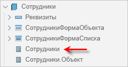
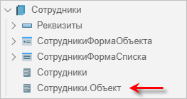
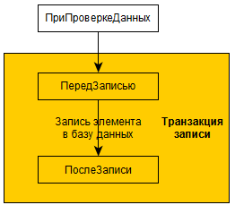

Типы встроенного языка, порождаемые элементом проекта вида «Справочник»
После того, как вы добавили в проект справочник и дали ему имя, «1С:Кабинет сотрудника» создаст несколько типов встроенного языка. Например, если в проекте есть справочник Сотрудники, то будут созданы следующие типы:
- Сотрудники
- Сотрудники.Ссылка
- Сотрудники.Объект
- Сотрудники.Данные
В общем случае имена этих типов выглядят следующим образом:
- <ИмяСправочника>
- <ИмяСправочника>.Ссылка
- <ИмяСправочника>.Объект
- <ИмяСправочника>.Данные
Тип <ИмяСправочника>
Тип <ИмяСправочника> доступен на сервере.
Он содержит методы для работы с элементами справочника и ссылками на них. Например, НайтиПоКоду(), ПолучитьСсылку().
Также он позволяет пересчитать дескрипторы доступа: ПересчитатьДескрипторыДоступа(), ПересчитатьДескрипторыДоступаДляОбъектов() (подробнее).
Этот тип не имеет конструктора и имеет единственный объект, обращение к которому выполняется по имени типа:
// Получить менеджера справочника «Сотрудники»
пер МенеджерСправочника = Сотрудники
// Пересчитать дескрипторы доступа справочника «Сотрудники»
Сотрудники.ПересчитатьДескрипторыДоступа()Модуль справочника
В проекте модуль, расширяющий тип <ИмяСправочника>, называется модулем справочника. Он исполняется на сервере.

В этом модуле вы можете обработать событие ПолучитьЗначенияВыбора для того, чтобы изменить стандартный алгоритм подбора элементов справочника при вводе по строке.
Также в модуле справочника можно обработать события вычисления дескрипторов доступа: ВычислитьДескрипторыДоступа, ВычислитьДескрипторыДоступаДляОбъектов (подробнее).
Вы можете расширить тип <ИмяСправочника>, добавив в модуль справочника собственные публичные методы. Например, метод, создающий элементы определенного вида:
// Создает сотрудников-кандидатов в справочнике «Сотрудники»
@проект
метод СоздатьКандидата(ФИО: Строка): Сотрудники.Ссылка
пер Сотрудник = новый Сотрудники.Объект()
Сотрудник.ФИО = ФИО
Сотрудник.Статус = СтатусыСотрудников.Кандидат;
Сотрудник.Записать()
возврат Сотрудник.Ссылка
;Этот метод будет доступен в других модулях:
// Вызов метода разработчика у менеджера справочника «Сотрудники»
пер НовыйКандидат = Сотрудники.СоздатьКандидата("Гаврилов Сергей")Тип <ИмяСправочника>.Ссылка
Тип <ИмяСправочника>.Ссылка доступен и на клиенте, и на сервере.
Он предназначен для описания ссылки на один элемент справочника.
Он имеет конструктор новый <ИмяСправочника>.Ссылка(), который позволяет создать новую ссылку по Ууид и метод ЗагрузитьОбъект(), который есть только на сервере и который позволяет получить объект (<ИмяСправочника>.Объект) из ссылки (<ИмяСправочника>.Ссылка).
Тип <ИмяСправочника>.Объект
Тип <ИмяСправочника>.Объект доступен на сервере.
Объект этого типа содержит данные одного элемента справочника и предназначен для создания, изменения или удаления элемента справочника.
Этот тип имеет конструктор новый <ИмяСправочника>.Объект(), который позволяет создать новый элемент справочника. Заполнив этот объект данными вы можете затем сохранить его в базе данных.
Модуль элемента справочника
В проекте модуль, расширяющий тип <ИмяСправочника>.Объект, называется модулем элемента. Он исполняется на сервере.

В нем вы можете обработать такие события как:
- ПриСоздании
- ПриПроверкеДанных
- ПередЗаписью
- ПослеЗаписи
- ПередУдалением
Во время записи элемента справочника «1С:Кабинет сотрудника» открывает в базе данных транзакцию записи и события вызываются следующим образом:

Вы можете расширить тип <ИмяСправочника>.Объект, добавив в модуль объекта собственные публичные методы. Например, метод, пересчитывающий данные элемента справочника, которые зависят от каких-то внешних данных, которые хранятся вне справочника:
@проект
метод ПересчитатьДанные()
// Алгоритм пересчета данных
....
;Этот метод будет доступен в других модулях:
// Вызов собственного метода объекта справочника «Сотрудники»
// В переменной ЭлементСправочника находится значение типа Сотрудники.Объект
ЭлементСправочника.ПересчитатьДанные()
ЭлементСправочника.Записать()Тип <ИмяСправочника>.Данные
Тип <ИмяСправочника>.Данные доступен на сервере.
Он используется только в обработчике события <ИмяСправочника>.Объект.ПослеЗаписи.
Он не имеет конструктора. «1С:Кабинет сотрудника» сам создает объект этого типа при наступлении упомянутого события. Он передает в обработчик события объект этого типа, наполненный «старыми» значениями.
Тип Справочники
Независимо от того, есть в проекте справочники, или нет, во встроенном языке существует тип Справочники. Он предназначен для того, чтобы определить, является ли значение ссылкой на какой-либо справочник (свойство ТипыСсылок) или элементом какого-либо справочника (свойство ТипыЭлементов). Также этот тип позволяет обойти все справочники и пересчитать дескрипторы доступа.
Тип Справочники не имеет конструктора и имеет единственный объект, обращение к которому выполняется по имени типа.
// Получить менеджера всех справочников
пер МенеджерВсехСправочников = СправочникиНапример, чтобы узнать, является ли значение, содержащееся в переменной Элемент ссылкой на элемент какого-либо справочника, можно использовать следующее условие:
// Проверка того, что элемент является ссылкой на справочник
Справочники.ТипыСсылок.Содержит(Элемент.ПолучитьТип())для Справочник из Справочники
Справочник.ПересчитатьДесткрипторыДоступа()
;Однако при этом нужно учитывать, что состав коллекции элементов объекта типа Справочник зависит от того, какой подсистеме принадлежит модуль, в котором был получен этот объект. В его составе будут только те справочники, которые принадлежат данной подсистеме и тем подсистемам, которые импортирует данная подсистема.